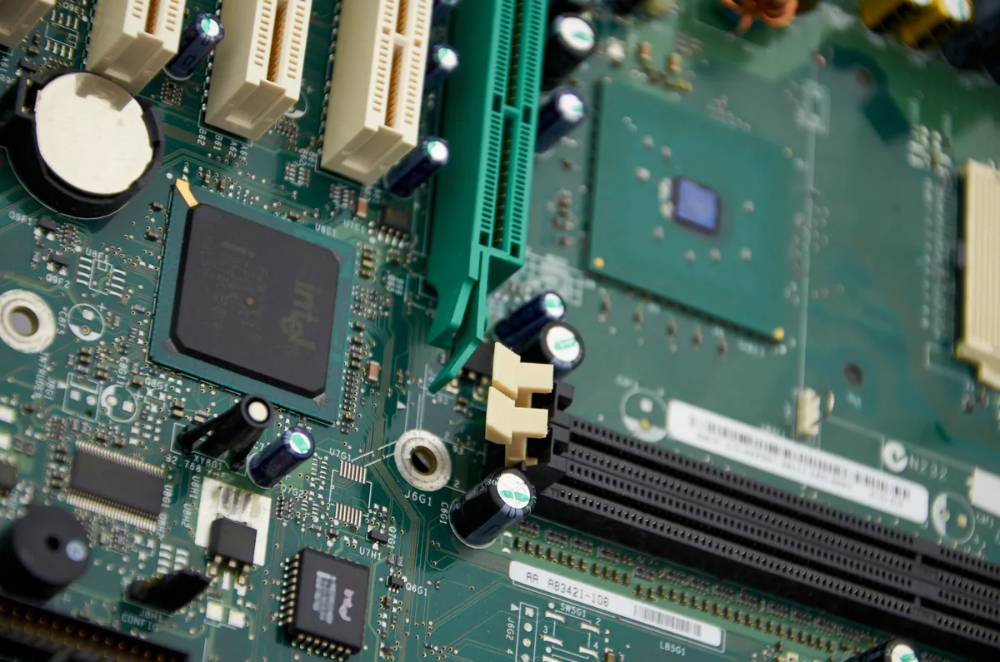

Thiết Kế PCB — Nhập Môn KiCad
Từ breadboard đến mạch in chuyên nghiệp — KiCad EDA miễn phí hoàn toàn, tiêu chuẩn công nghiệp mã nguồn mở.
- Hiểu quy trình thiết kế PCB: Schematic → Netlist → Layout → Gerber
- Cài và làm quen giao diện KiCad 7/8 (miễn phí)
- Vẽ schematic đơn giản trong KiCad Schematic Editor
- Gán footprint cho từng linh kiện (DIP, SMD, THT)
- Chuyển sang PCB Editor — đặt linh kiện và route tracks
- Áp dụng quy tắc thiết kế: clearance, track width, ground plane
- Chạy DRC (Design Rule Check) — phát hiện lỗi
- Xuất Gerber files để gửi nhà sản xuất (JLCPCB, PCBWay)

1. Quy trình thiết kế PCB
Vẽ schematic: đặt ký hiệu, gán giá trị và tên net; chạy ERC, xem và giải thích từng cảnh báo thay vì chỉ nhìn số lỗi.
Gán footprint: đối chiếu datasheet đúng package với footprint của mỗi linh kiện. Ví dụ THT có DIP/TO-92/TO-220; SMD có 0603/SOT-23, nhưng tên package chưa đủ để xác nhận kích thước và thứ tự chân.
Layout PCB: đặt linh kiện, đi dây đồng theo netlist, bố trí đường nguồn/đường hồi và mặt phẳng đồng theo yêu cầu của mạch.
Chạy DRC: kiểm clearance, độ rộng đường, lỗ khoan và các net chưa nối; xem lại những ngoại lệ được chấp nhận.
Xuất hồ sơ chế tạo: Gerber cho lớp đồng (
F.Cu,B.Cunếu dùng), solder mask, silkscreen và tệp khoan. Xem lại các lớp bằng Gerber viewer trước khi gửi chế tạo.
2. KiCad — Công cụ miễn phí tiêu chuẩn công nghiệp
| Tool | Giá | Ưu điểm | Nhược điểm |
|---|---|---|---|
| KiCad | Miễn phí, mã nguồn mở | Không giới hạn tính năng, cộng đồng lớn, CERN dùng | Giao diện học lâu hơn Altium |
| Eagle | Miễn phí (giới hạn 2 lớp, 80cm²) | Phổ biến, tích hợp Autodesk | Bị mua bởi Autodesk, bản miễn phí hạn chế |
| Altium Designer | $2,800–9,000/năm | Mạnh nhất, chuyên nghiệp nhất | Đắt, không dành cho cá nhân/học sinh |
| EasyEDA (OSHWHub) | Miễn phí (web) | Tích hợp JLCPCB, thư viện linh kiện sẵn | Phụ thuộc internet, ít tính năng nâng cao |
3. Thực hành: Vẽ PCB mạch LED blinker với BC547
Cài KiCad 8 tại kicad.org. Tạo project mới: "led_blinker".
Mở Schematic Editor. Thêm linh kiện (A): VCC power → R1(10kΩ) → BC547 Base. Collector → R2(1kΩ) → LED → VCC. Emitter → GND. Thêm decoupling C=100nF từ VCC→GND.
Chạy ERC (Electrical Rules Check) — sửa lỗi nếu có (thường là thiếu PWR_FLAG).
Assign Footprints: BC547 → TO-92_Inline, R1/R2 → R_0805, LED → LED_5mm, C → C_0805.
Từ Schematic → Tools → Update PCB from Schematic. Tất cả linh kiện xuất hiện dưới dạng "rats nest".
Vẽ Board Outline (Edge.Cuts layer): hình chữ nhật 30×20mm.
Đặt linh kiện trong board. BC547 ở giữa. Resistors và capacitors gần transistor.
Route tracks: Track width = 0,3mm cho tín hiệu, 1mm cho power. Dùng Route → Interactive Router.
Thêm copper fill (ground plane) layer B.Cu — Edit → Fill All Zones → tô đồng GND.
Chạy DRC → kiểm tra 0 errors. Xuất Gerber: File → Fabrication Outputs → Gerbers.
4. Quy tắc PCB thiết kế cơ bản
| Quy tắc | Giá trị khuyến nghị | Lý do |
|---|---|---|
| Track width — tín hiệu | 0,2–0,3mm | Đủ cho các nhà sản xuất giá rẻ (min 0,1mm) |
| Track width — power (1A) | 0,8–1mm | Mỗi 1mm/oz = ~1A (ở nhiệt độ phòng) |
| Track width — power (3A) | 2–3mm | — |
| Clearance (khoảng hở) | ≥0,2mm | Min của JLCPCB. Tín hiệu cao áp cần lớn hơn |
| Via drill | 0,3mm (min 0,2mm) | Xuyên qua 2 lớp |
| Tụ decoupling | Sát chân VCC của IC | Giảm inductance ký sinh đường nguồn |
| Ground plane | Lớp B.Cu full GND | Giảm impedance GND, shielding EMI |
1: 500mA = 0,5A → 0,5mm (theo 1mm/A). Dùng 0,5–0,8mm để an toàn. 2A → 2mm minimum. Thực tế chọn 2,5mm để biên an toàn.
2: Dây dẫn PCB có điện cảm ký sinh (~1nH/mm). Mỗi 5cm dây = ~50nH. Khi IC switch gây spike dòng đột ngột, 50nH tạo V = L × di/dt — spike điện áp truyền đến IC qua dây dài. Tụ sát chân: spike được hấp thụ ngay tại nguồn, không có thời gian truyền đi → IC ổn định.
3: Hoàn thành theo hướng dẫn thực hành A và B. Gerber viewer sẽ hiển thị: lớp đồng F.Cu (màu đỏ), B.Cu (màu xanh), mask và silk. Kiểm tra: track có kết nối đúng không, có đủ clearance không.